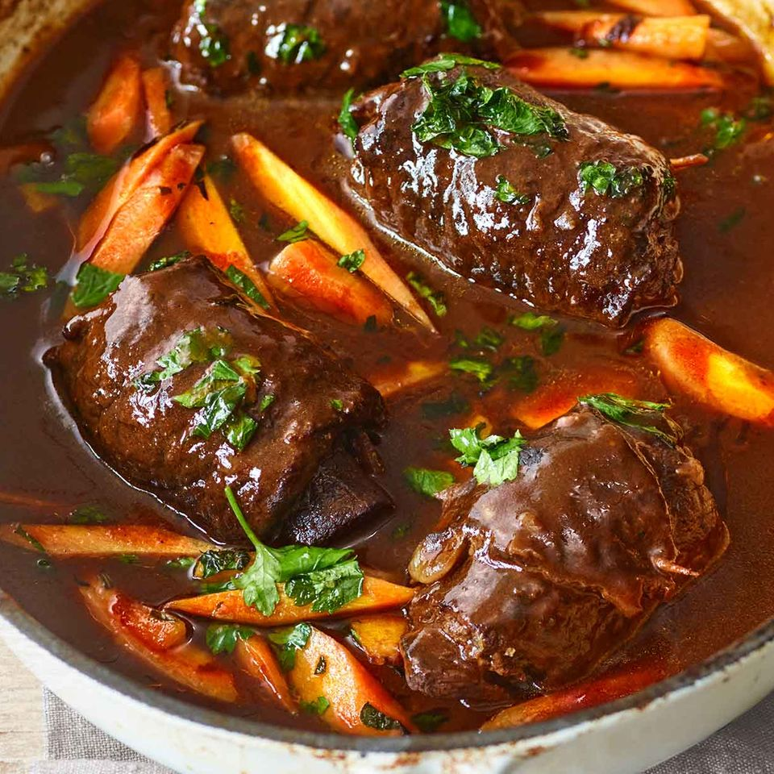

German Beef Rouladen

Meat rolls filled with bacon, onions and pickles. Delicious, easy recipe learned while visiting Germany.
One of Germany’s most famous and delicious dishes, Rouladen are beef roulades filled with bacon, onions, mustard and pickles, then browned and simmered in the richest gravy imaginable. Mouthwateringly delicious, this authentic Rouladen recipe is the only one you’ll ever need!
Rouladen is a traditional German dish featuring long, thin strips of meat slathered with mustard and filled with bacon, onions, and pickles. The filling is enclosed by rolling up the meat strips and the roulades are then browned and slow-simmered in a rich gravy.
Rouladen are enjoyed throughout the year in Germany but are often associated with Sunday dinners and special occasions like Christmas Eve.
Ingredients
- 1.5 lbs flank steak
- German stone ground mustard, to taste
- .5 pound thick sliced bacon
- 2 large onions, sliced
- 1 (16 ounce) jar dill pickle slices
- 2 tablespoons butter
- 2.5 cups water
- 1 cube beef bouillon
Steps
- Cut the flank steak into thin filets; about 1/4 inch thick and 3 inches wide.
- Generously spread one side of each filet with mustard to taste. Place bacon, onions and pickle slices on each filet and form into a roll. Use string or toothpicks to hold the roll together.
- Heat a skillet over medium heat and melt butter. Place the rolls in the butter and saute until browned.
- Pour in 2 1/2 cups of water and add the bouillon cube; stirring to dissolve the bouillon cube. Simmer the rolls for about an hour.